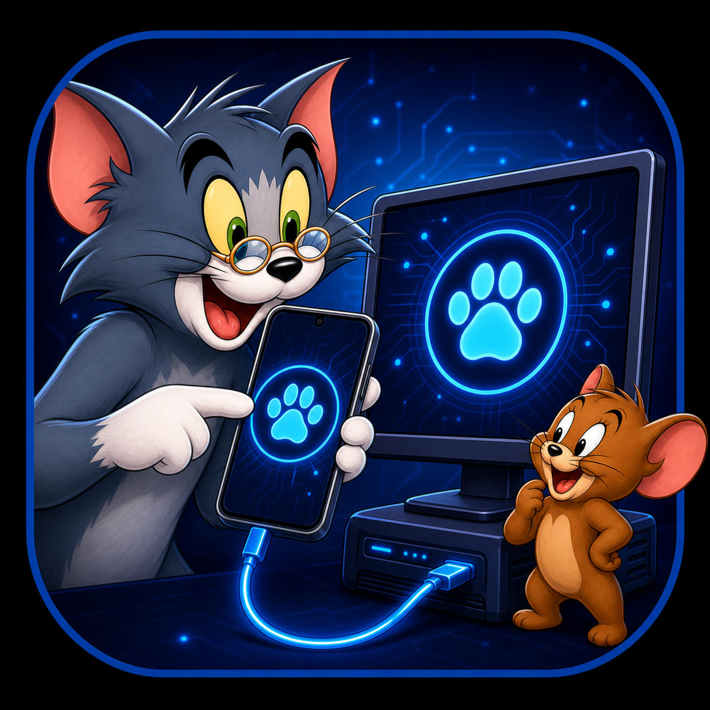

等待连接
投屏窗口独立运行，你可以返回 Test cat 继续使用其他工具。
连接一台 Android 手机
开启 USB 调试并连接数据线，Test cat 会自动部署 scrcpy 服务。
- 打开开发者选项
- 开启 USB 调试
- 连接数据线并允许调试

投屏窗口独立运行，你可以返回 Test cat 继续使用其他工具。
开启 USB 调试并连接数据线，Test cat 会自动部署 scrcpy 服务。
通过 ADB 读取当前设备，生成可直接粘贴到缺陷单的正式文案。
已按测试缺陷单常用格式排版，可直接复制。